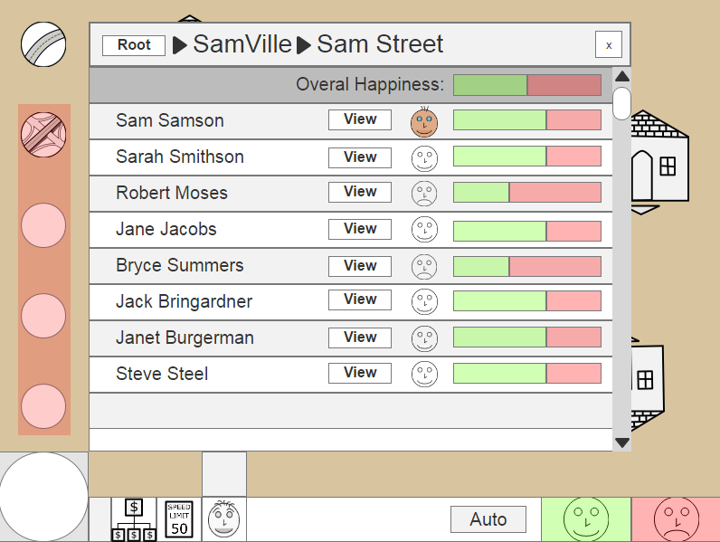
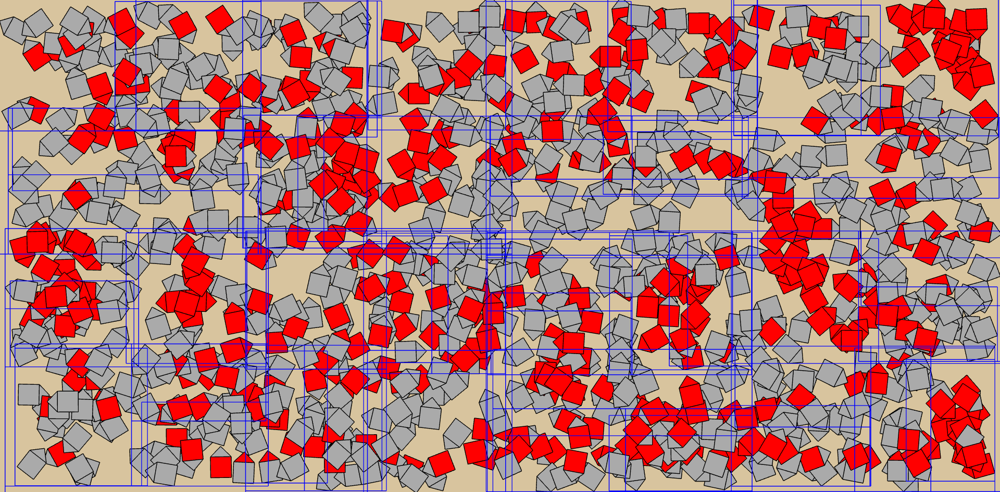
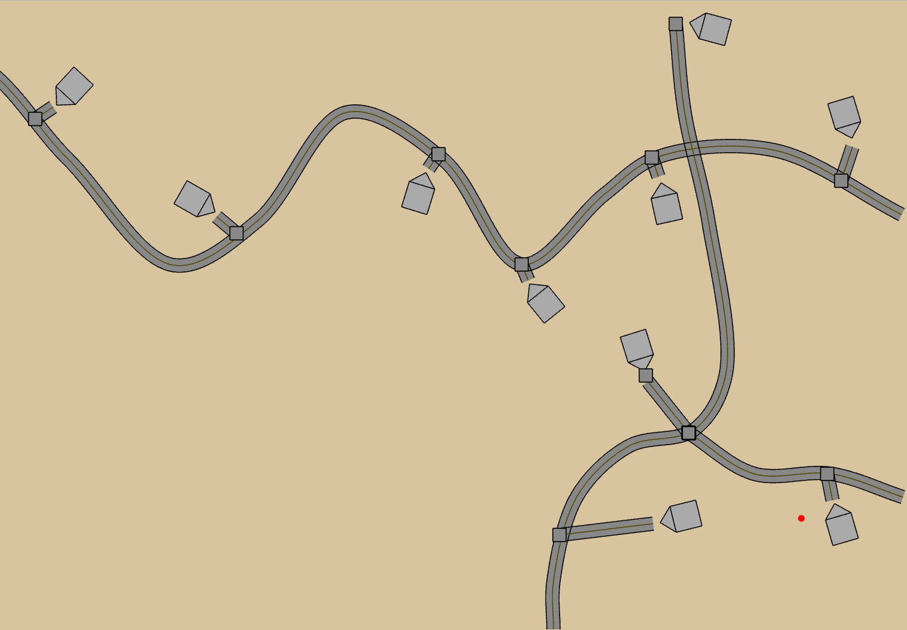
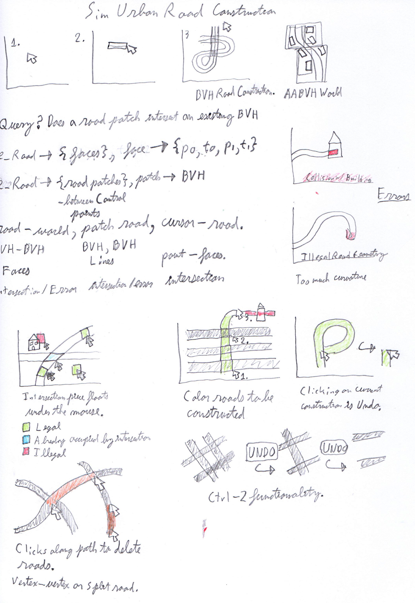

Introduction
I am working on a computer game for people such as Transportation Engineers, Urban Planners, and citizens who want to learn about the design of urban systems such as infrastructure networks.
Process
FIXME: Make an illustration for my process on this one. My proccess is Sketch / Design -> Develop -> Test / gather info. (I need to think this through more.)
Sketching

Prototype 1
Play the prototype!
User Testing
Prototype 2
Play the prototype!
Sketching

User Research Survey 1
Written Feedback
- People do not like computational limitations.
- People only want to focus on the details that matter to them.
- People like the ability to rapidly experiment and then undo actions.
- People desire a streamlined, accessible, rich in feedback and fun such as in Rollercoaster Tycoon.
- People don’t like wasting time. They want to see action following from their actions.
- Some people have learned life lessons through playing with simulations, such as learning tradeoffs in Oregon Trail that have influenced their real world hiking behaviors.
- Navy simulations mimicked real life, which allowed people to take real life actions in a situation as if they had prior experience. Something about the immersive and engaging experience can make simulations more memorable than facts and teaching alone.
- People like the ability to make horrendously bad decisions and see what will happen through the safety of a simulation.
- Portability is important. That is why internet simulations may be more accessible than desktop simulations and physical installations.
- Use non-outdated technology, because a great simulation is useless if nobody can use it.
Sketching
After the survey feedback, I drew some more sketches.

Design Prototype 1
This is prototype of the user input experience and various information menus. Please click here to see a live version of this prototype. 
Feedback
- It is boring to create line items and manage a categorized hierarchy for infrastructure elements. The feedback should be displayed over the land, the categorization should be automatic, and the user should spend as much time as possible acting as a transportation engineer and thinking about placing roads.
- I evidently didn't mock up enough links and users had trouble finding the info screen for Sam Street. Perhaps the element menu linkages are out of whack a little bit.
- It might be a good idea to automatically guide the user towards problematic roads and stellar roads through a viewport navigation system.
- The users want to click on the green / red bar of any other information panel on the screen to bring up a relevant menu.
- The users seemed to gravitate towards the 'more information' pane on the characters, which means that they didn't immediatly believe that the linked house / person / street buttons were useful for their purposes. I should either work on the naming or work on not requiring people to think too many logical steps ahead.
- I showed this prototype to my mentor Jack and he said that we might use this project as a competitive e-sports like game for the traffic bowl competition. This was good news, because I was worried that fun might not be as important as the technical details. The main take away is that I should focus on immediate feedback and interaction, rather than long term rational plans. We are going for dynamism, rather than long term contest submissions.
Axis Aligned Bounding Volume Hierachies
Play a Demo! Sketching
Before starting on prototype 3, I did some sketcing where I though about algorithms and data structures and how this work fits into my larger life as an algorithm designer. I want to design Sim Urban in such a way that I solve some useful problems that I can continue to use in my work. They will also be necessary for creating an efficient user experience, which simulation games like this depend on, which was verified in user research survey 1, where many of them said that their least favorite past simulation game experiences have come about when the simulation makes them aware of computational limitations.

Prototype 3
In prototype 3 I completed a major refactoring of the code base, which will make it much easier to iterate on it in the future. But, since my game will rely on a rock solid algorithmic foundation, I spent a lot of time working on the invisible computations under the hood, but I have't yet completed them. The visible results of this iteration are a polygonalization routine that fills in the roads and some visible intersection objects.
Play the prototype! Sketching
Soon, when I have some more time, I will get more of the basic transportation network topology functionalities working. Here are some sketches of various user interactions. I would like to provide the user with clear feedback about what actions are legal, illegal, or will provide a connection to the existing network.
